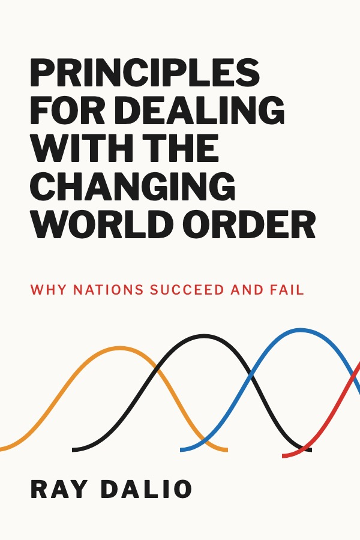

Principles for Dealing with the Changing World Order
Ray Dalio

Ray Dalio built Bridgewater, the world's biggest hedge fund, by studying how economies behaved long before he was born. A few years before publishing, he saw three things happening together that had never happened in his lifetime: huge debts with near-zero interest rates and mass money printing, the deepest internal divisions in about a century, and a rising power challenging the leading one. The last time all three coincided was 1930–45. So he studied the rise and fall of every major empire since 1500, and of Chinese dynasties since 600, and found the same Big Cycle each time.
2021 · 3 parts · 14 chapters + appendix · ~150,000 words · hundreds of charts
The thesis
The times ahead will be different from our lifetimes, but not from history
The times ahead will be radically different from those we've experienced in our lifetimes, though similar to many times in history.Opening line
Dalio learned this the hard way. On 15 August 1971, aged 22 and clerking on the floor of the New York Stock Exchange, he heard Nixon end the dollar's convertibility into gold. He expected stocks to crash. They rose about 4 percent instead, because a devaluation was something he had never seen. His costliest mistakes always came from events that hadn't happened in his lifetime but had happened many times before. So, as a doctor studies many cases of one disease, he studies many cases of each event, writes the pattern down as a principle, and tests it with computers. Only the clothes, the languages and the technologies change.
Dalio's "upward-pointing corkscrew". Real GDP per person and life expectancy rise steadily over 500 years, so depressions and wars barely register on the long trend. To the people living through them, though, they decide everything.
1 · Debt & money
The long-term debt cycle: debts build until they can't be repaid in hard money, so money is printed and devalued.
2 · Internal order
Wealth and values gaps grow until bad times turn class tension into revolution, peaceful or violent.
3 · External order
A rising power challenges the leading one. With no world court that works, power decides.
Add innovation (which lifts everything) and acts of nature (droughts, floods and pandemics have killed more people than wars) and you have Dalio's "Big Five". When they move in the same direction, everything else follows. Peaceful, creative periods outlast the destructive ones by about 5 to 1. The destructive ones work like "cleansing storms" that clear away excess debt and lead to a new order.
Part I
How the World Works
An archetype distilled from 11 empires over 500 years.
Chapter 1 · The Big Cycle in a tiny nutshell
Who led the world, and for how long
Simplified from Dalio's chart of the relative standing of great empires (each index blends eight measures of power). China led for centuries, fell steeply from about 1840, and is rising again. The Dutch peaked around 1650, the British in the 1800s, the US after 1945. The US is now in relative decline. Shapes are approximate.
Eight measures of power, rising in order
Dalio scores each empire on education, competitiveness, innovation and technology, economic output, share of world trade, military strength, financial-centre strength and reserve-currency status. They rise in roughly that order, and they fall in roughly that order too. Education comes first. The reserve currency comes last and outlives the rest, much as a common language stays in use after the empire that spread it has faded.
The rise
Low debt, small gaps, strong leaders, good education that includes character and civility, inventiveness (the Dutch made a quarter of the world's major inventions), capital markets, then a financial centre and a reserve currency.
The top
Wages rise and rivals copy the know-how (Britain hired Dutch ship designers). Generations raised in comfort replace those who fought. Bubbles form, gaps widen, and the "exorbitant privilege" of a reserve currency invites over-borrowing. The rich start borrowing from poorer savers, as the US did from China from the 1980s, when its income per head was 40 times China's.
The decline
Debts can't be serviced, so money is printed. Conflict between rich and poor brings populism of the left and right, taxes on the rich and capital flight. A rival exploits the weakness. The cycle ends when holders of the reserve currency lose faith and sell.
The 18-step archetype, redrawn from chapter 1. Destruction periods (depression, revolution, war) usually last 10–20 years. Peace and prosperity between them lasts 40–80. A whole empire lasts about 250 years, give or take 150.
When the Dutch gave way to the British, and the British to the Americans, the same five things happened: a debt crisis, an internal revolution transferring wealth from haves to have-nots (peaceful or violent), an external war, a currency breakdown, and a new domestic and world order. The 1945 order was built at Bretton Woods (1944), with the UN in New York and the IMF and World Bank in Washington. At that point the US held two-thirds of the world's gold, produced about half of its output and had a monopoly on nuclear weapons.
Chapter 2 · The determinants
A perpetual-motion machine with 18 levers
Dalio models history as cause and effect, like a chess player who codes up their own rules and plays alongside the computer. The inherited determinants are geography, geology, acts of nature, and genes (which explain at most about 15 percent of behavioural differences between populations). Most of the rest is human capital: whether people hold themselves to high standards, are self-disciplined and civil, and are "self-sufficient plus", producing more than they consume. That is how the Netherlands, England, Switzerland and Singapore grew rich, and how Tesla took on General Motors.
Which "self"?
Self-interest drives everyone, but for which self: individual, family, tribe, state, country, humankind? "What are… you, willing to die for?" Before about 1650, tribes and states mattered more than countries. Today the world is turning nationalist, and Americans are sorting themselves into like-minded states.
Five generations of money
1 Poor and think poor. 2 Rich but think poor: they save, invest and work hard, the best time to invest (Asian Tigers, then China). 3 Rich and think rich: a Renaissance, as in the US 1950–65 and China now. 4 Poorer but still think rich: debt, twin deficits, bubbles. 5 Poor and think poor again. As the saying goes, "shirtsleeves to shirtsleeves in three generations".
The other determinants: capital markets, the ability to learn from history (the Chinese excel; Dalio says you should understand everything since 1900), short-term gratification (most dangerous in politicians), culture ("culture is destiny"), openness (isolation, as in the late Ming and Edo Japan, is among the most common reasons empires fail), leadership (a few hundred people per generation make the difference), wealth gaps, values gaps, class struggle, a left–right swing roughly every ten years, the prisoner's dilemma, win-win versus lose-lose relationships, and the balance of power. Dalio suggests an exercise: rate a country from 1 to 10 on each and add up the scores.
The balance-of-power loop. 1) The weaker side forms alliances ("the enemy of my enemy"). 2) A war decides the winner, typically when the sides are roughly equal and their differences existential. 3) The winners fight each other: the Reign of Terror, the Red Terror, the US and USSR after 1945, China's communists and nationalists. 4) Peace and prosperity breed excess. 5) Conflict leads to a new order. Societies that hand out roles by merit rather than privilege, drawing on the widest range of people, last longest.
Chapters 3–4 · Money, credit, debt · The changing value of money
Debt eats equity, but central banks can feed debt
Every person, company and government has an income statement and a balance sheet. One party's spending is another's income, and one party's debt is another's asset, so cuts and defaults spread. Dalio's exercise: how long would you last if your income stopped and your assets halved? The trap is that money and credit can be created. They stimulate when they are handed out and depress when they must be repaid. That produces short-term debt cycles (about 8 years, the business cycle) inside long-term debt cycles (50–75 years). Those come once in a lifetime and so catch almost everyone out. The current one began in 1945.
Debt eats equity but central banks can feed debt by printing money instead.Chapter 3
Hard money, little debt. After the last cycle's debts have been wiped out, trust is low, so money is gold, silver or a hard peg. "Gold is the only financial asset that isn't someone else's liability."
Paper claims on hard money. Banks, and in China temples, store the metal and issue notes. People treat the notes as money.
More debt. Lending feels good to everyone, until the claims vastly exceed the hard money and the goods there are to buy.
Crisis, run, devaluation. Faced with a choice between default and printing, a central bank nearly always prints. Done well, this is a "beautiful deleveraging".
Fiat money. The link to hard money is cut (as on 15 August 1971), and money and debt grow until people lose faith.
Flight into hard assets. People move into gold, real assets and foreign currencies. Governments ban those flows, then eventually return to some hard anchor. From the Song dynasty to Weimar, the circle repeats.
The three monetary systems and how countries rotate between them, after Dalio's diagram. Each currency regime typically survives two to four big debt crises (write-downs of 30 percent or more) before it breaks.
Four ways to cut a debt burden
Lever
Effect
Why it ends
Austerity
Deflationary
Too painful to last
Default / restructure
Deflationary
One party's debt is another's asset
Transfers (tax the rich)
Redistributive
Politically hard, but usually part of the fix
Print and devalue
Inflationary
"Most expedient, least well-understood, and most common". Nobody objects, because holders of cash and bonds don't notice the loss.
That is why Dalio thinks the main risk to savers is not default but the falling value of money itself. Holding bonds late in the cycle is "like holding a ticking time bomb that rewards you while it is still ticking". The Old Testament scheduled a Jubilee, a general forgiveness of debts, every 50 years.
~20%of the roughly 750 currencies in use since 1700 still exist, and every one of those has been devalued
−0.1%average real return a year on cash (bills) since 1912, against +1.6 percent for gold
$35 → $850gold price: fixed from 1944 to 1971, then $850 by 1980
Average annual real returns from chapter 4. In the fiat era German cash lost more than 18 percent a year, and French, Italian and Japanese cash more than 2 percent. Six big devaluations since 1850: the US Civil War, the First World War, 1919–23, the 1930s, the Second World War and 1971.
A currency loses reserve status after the economic and political lead has already gone to a rival, when big debts are being monetised. A bank run follows, usually tied to war debts, and countries often suspend convertibility before they devalue (Britain in 1947, the US in 1971). The losers of wars see their currencies collapse outright. Indebted winners, like Britain after the world wars, lose reserve status more slowly.
Chapter 5 · The Big Cycle of internal order and disorder
Six stages, like the stages of a disease
How people are with each other is the primary driver of the outcomes they get.Chapter 5
The internal cycle takes about 100 years, give or take a lot. Each stage calls for a different kind of leader: Tang Taizong and Caesar Augustus as consolidators; Adenauer, Lee Kuan Yew and Deng as "civil engineers"; Gladstone, Bismarck, Kennedy and Deng as visionaries. Churchill and Mao were great "inspirational generals" and poor civil engineers.
Stage 4 · Bubble prosperity
Credit-fuelled bets that the trend will continue (Japan 1988–90, the US in 1929 and 2006–07). Consumption and luxury crowd out investment. Leaders turn decadent: Nero used Rome's fire to grab land for a palace, Louis XIV expanded Versailles, and the Wanli Emperor stopped governing to build his tomb.
Stage 5 · The classic toxic mix
1) Weak finances, 2) large income, wealth and values gaps, 3) a severe shock (a burst bubble, a pandemic, a war). Across more than 50 civil wars, the most reliable leading indicator was bankrupt government finances combined with big wealth gaps.
Late in stage 5 the familiar markers appear. Decadent spending starts to look grotesque, and bureaucracy blocks obvious fixes (in the US, schools are funded by local taxes, so rich towns get better schools). Populists of the left and right rise, and moderates shrink to a minority before disappearing altogether. Classes are stereotyped, then demonised and scapegoated. Truth drains out of public life: in 1976, 72 percent of Americans trusted the media; by 2019, 41 percent did. Finally rules stop being followed, police and courts are turned into weapons, and paramilitaries form. When people die in the fighting, stage 6 has begun.
1 in 6chance of severe internal conflict when 60–80 percent of Dalio's economic red flags are present. The US is in that range.
1 in 3chance of civil war or revolution when more than 80 percent are present
~30%Dalio's estimate of a civil-war-like stage 6 in the US within ten years
Connecticut, up close. Dalio's home state has the highest income per head in the US, the widest wealth and income gaps, and huge unfunded pensions. His wife's foundation found that 22 percent of its high-school students are "disengaged" (absent more than a quarter of the time and failing) or "disconnected" (dropped out). The haves don't feel rich, the have-nots see decadence, and each stereotypes the other. In his words: "Averages don't matter as much as the number of people who are suffering and their power."
When in doubt, get out.Chapter 5: the doors close, for people and capital, once things get bad
Revolutionary leaders tend to be educated, middle-class and charismatic (Danton, Robespierre, Lenin, Trotsky, Mao, Zhou Enlai), and their coalitions split once they win. Civil wars are more brutal than seemed possible beforehand, because "moderates lose out in knife fights". Foreign powers almost always join in. Democracies bend more than autocracies, because people can only blame themselves. Their danger is gridlock, which leads people to call for a strongman. Dalio's conclusion is that no system is always best, and that working together to grow and share the pie beats any civil war.
Chapter 6 · The Big Cycle of external order and disorder
Between countries, the law of the jungle
Inside countries there are laws, police, judges and penalties. Between them there are none that work: the League of Nations and the UN were weaker than the great powers. So disputes end in threats, deals or fights, and an economic war comes first, typically about a decade before the shooting starts.
Trade & economic
Tariffs and import or export bans, from Smoot-Hawley (1930) to today.
Technology
What is shared and what is protected. Whoever wins this war probably wins the others.
Capital
Asset freezes, blocked capital markets, embargoes. "No money = no power."
Geopolitical
Territory and alliances, settled by negotiation and commitments.
Military
Once it starts, every other weapon is used to the full.
+ culture & ourselves
Added in chapter 13: what each side would die for, and how well each manages itself.
Simplified from Dalio's chart of European deaths from conflict as a share of the population: three big cycles of about 150 years each, with peaceful creative eras sowing the seeds of terrible wars. Shape approximate.
When war is likeliest
When military power is roughly comparable and the differences are irreconcilable and existential. Today the most explosive case is the US and China over Taiwan. Two things are certain about any war: it "won't go as planned" and it "will be far worse than imagined".
Have power, respect power, use power wisely
Power beats agreements. Don't fight a war you will lose. Generosity and trust are power too. Fight early if your power is declining and later if it is rising. Keep power like a hidden knife. Being able to outspend your rival is how the US won the Cold War without shooting.
The 1930s as a template. The Depression pushed Germany, Japan, Italy and Spain towards fascism ("autocratic, capitalist, collectivist") and the USSR and China towards communism, while the US and UK redistributed wealth and kept their democracies. Under Hitler, German unemployment fell from 25 percent to almost zero and stocks rose about 70 percent, financed by borrowing. Japan's exports halved and it went broke in 1931, then took the oil, coal and rubber it needed by force. In July and August 1941 the US froze Japan's assets, closed the Panama Canal to its ships and embargoed oil. That cut off three-quarters of Japan's trade and 80 percent of its oil, leaving about two years' supply. Japan faced a choice between backing down and attacking, and Pearl Harbor followed. "In war one's ability to withstand pain is even more important than one's ability to inflict pain."
Chapter 7 · Investing in light of the Big Cycle
US and UK returns are the exception, not the rule
All markets come down to four drivers: growth, inflation, risk premiums and discount rates. Most investors look back only to the 1950s, and only at the US and UK, the two countries that won both world wars, during the best stretch of the cycle. That is survivorship bias. Lending at interest was forbidden until about 1350. Then Italian bankers such as the Medici invented deposits, bonds and stocks, which Dalio calls the alchemy of "financial wealth". Financial claims now so dwarf real assets that they could never all be cashed in.
7 of 10leading powers of 1900 saw their wealth virtually wiped out at least once
~25%of real US equity returns lost to taxes over a typical 20-year period
1.5%a year by which US investors trailed US stocks from 2000 to 2020, by selling low and buying high
Risk, for Dalio, is not volatility. It is failing to earn what you need, being ruined, or having your wealth taken. Before 1945 wealth was confiscated, capital controlled and stock markets closed for years, and in many countries capitalists were jailed or killed. Those events seem implausible now only because no one alive remembers them. He also notes that in 2021 a US bond would take about 45 years to return what you paid for it in nominal terms (and in real terms might never), so he asks why not buy real things instead.
Part II
The Last 500 Years
The Dutch, the British, the Americans and the Chinese: the same story in different costumes.
Chapters 8–9 · The world in 1500 · The Dutch Empire and the guilder
A country of 1–2 million that led the world
In 1500 a day's ride was 25 miles, there were no countries, only family dynasties, and Ming China was far ahead of Europe: a population of 100–130 million against Europe's 50–55 million, Confucian examinations, smallpox inoculation, the world's largest navy. Then China turned inward, scrapping Zheng He's treasure fleets in favour of comfortable isolation. Meanwhile Europe went through the Commercial Revolution (Venice issued a perpetual 5 percent bond for centuries), the Renaissance, the voyages of discovery, the Reformation, the Peace of Westphalia (1648, which invented sovereign countries), the Scientific Revolution and the Enlightenment.
The rise
The Dutch gained independence from a decadent, over-stretched Habsburg Spain (Philip II defaulted four times) in 1581. They valued education, saving, merit and tolerance. Their ships could sail around the world. In 1602 they created the first publicly listed company, the Dutch East India Company, at one point about a third of world trade, and the first stock exchange. In 1609 came the Bank of Amsterdam and the guilder, the first reserve currency. Income per head reached twice that of other European powers.
The fall
The good life made them complacent. Wages rose, the Company missed the tea trade, and Britain learned Dutch methods. William III's accession to the English throne in 1688 moved Dutch merchants to London. After the Fourth Anglo-Dutch War (1780–84) the Company, too big to fail, borrowed heavily from the bank, and a run began.
The end of the first reserve currency. Depositors eventually recovered only about 20 percent of their metal. Investors who had moved into British assets did far better.
Chapter 10 · The British Empire and the pound
2.5 percent of the world's people, 20 percent of its income
Britain's rise began with civil war and the Glorious Revolution, which strengthened Parliament and established the rule of law. Leaders such as Pitt, Peel and Gladstone came from merchant families. Britain taxed twice as effectively as France, and the Bank of England (1694) made its bonds cheap and liquid. Then came iron, coal and inventions: the steam engine in 1712, the spinning jenny in 1764, the power loom in 1785, and the Manchester–Liverpool railway in 1825. France had the Enlightenment but also John Law's Mississippi bubble, borrowed at twice Britain's interest rates, and had a court living in Marie Antoinette's mock village. That led to revolution, the assignat hyperinflation, and in 1796 a ceremony at which the money presses were destroyed. Then came Napoleon. After the Congress of Vienna, Britain enjoyed a century of peace.
~40%of world exports at the peak around 1850; about 60 percent of world trade was priced in pounds from 1850 to 1914
>70%of wealth owned by the richest 1 percent in the late 1800s, and 93 percent by the top 10 percent
30%devaluation against the dollar in 1949, followed by another in 1967. Sterling then disappeared from central banks' reserves within two years
The decline was classic. The US and Germany industrialised faster in the Second Industrial Revolution, and Bismarck's compulsory schooling lifted Germany's share of manufacturing from 5 to 13 percent. Inequality brought unions and the Labour Party. Wilhelm II started a naval arms race, and the First World War killed about 8.5 million soldiers and 13 million civilians. The Versailles settlement "made a second war inevitable". Britain ended the Second World War bankrupt. It was lent $3.75 billion in 1946, and when it reopened convertibility in 1947 a run forced it to shut again within weeks, despite Attlee calling for "another battle for Britain". Afterwards, Robert Schuman and Konrad Adenauer set out to make European war "not merely unthinkable, but materially impossible", starting with the coal and steel union that grew into today's EU, now a secondary power.
Chapter 11 · The United States and the dollar
About 70 percent of the way through its Big Cycle
The US founded itself peacefully, grew through the Gilded Age (eight New York banking panics between 1836 and 1913, then the Federal Reserve), kept gold convertibility through the First World War, and emerged from the Second as the big winner. It had two-thirds of the world's gold, the Marshall and Dodge plans, NATO and Bretton Woods. Dalio, who started investing at 12 in 1961, says he was born in the right place at the right time: most people were middle class, and most were happy.
A schematic of the US interest-rate cycle since 1945: up through the inflation of the 1970s to Volcker's peak, then down to zero in 2008 and 2020. Gold went from $35 to $850. Monetary Policy 1 means interest rates, MP2 means printing money to buy bonds, and MP3 means central banks financing government spending directly, which is where the US now is.
Dalio's own crash, 1982. He predicted the debt crisis correctly, then bet on a depression that never came. He had to let everyone at Bridgewater go and borrowed $4,000 from his father to pay the family's bills. The lesson changed how he worked. Debts in a currency the central bank can print can be managed, and "the value of assets is the reciprocal of the value of money and credit". He calls it one of the best things that ever happened to him.
After the Cold War came globalisation: production moved to wherever it was cheapest, China joined the WTO in 2001, and "workers in other countries… and machines replaced middle-class workers in the United States". Each crisis brought lower rates and more debt. After 2008 the printed money lifted asset prices, which favoured those who already owned assets, and wealth gaps reached their widest since 1930–45. Political polarisation is now the highest on record: in 1960 about 5 percent of parents would have minded their child marrying someone from the other party, and by 2010 nearly half of Republican parents and a third of Democratic ones would.
Chapter 12 · The rise of China and the renminbi
A long decline, then the fastest rise in history
Many people urged Dalio not to publish this chapter. He did anyway, after nearly 40 years of visiting China, because "to not speak honestly would cost me my self-respect". Chinese dynasties follow the same arc, lasting about 250 years. They decline the same way: elites with land escape taxes, money gets printed (the Song invented paper money, and later its notes lost more than 90 percent of their value), infrastructure decays, floods and droughts trigger peasant revolts, and isolation hands the advantage to "barbarians". Chinese leaders know this history intimately. Mao read the 20-volume Comprehensive Mirror several times, and Chinese leaders plan in centuries rather than election cycles.
1949–76 · Mao
Consolidation and the "iron rice bowl", which gave security but little motivation. The Korean War. The Great Leap Forward (the economy shrank 25 percent and 16–40 million people died in the famine) and the Cultural Revolution. Then the opening to Kissinger and Nixon in 1971–72.
1978–2012 · Deng and successors
"Reform and opening up". Income per head was under $200. Deng planned 70 years ahead and quadrupled GDP per head by 1995, five years early. Term limits came in 1982. Lee Kuan Yew called Deng the greatest leader of the 20th century.
2012– · Xi
Fighting corruption and debt, investing in technology, Belt and Road, tighter party control (term limits scrapped in 2018), and a target of a "modern socialist country" by 2049. Rising tension with the US.
Calculators and skyscrapers. On his first visit in 1984, Dalio's $10 calculators were treated as miraculous gifts even by senior officials. Lecturing in CITIC's "Chocolate Building", he pointed at the low courtyard houses below and predicted skyscrapers. "You don't know China," his hosts said. In 1995 he sent his 11-year-old son Matt to a poor Beijing school with no heating until late November, where Matt got an excellent education, character included. Dalio reckons that over the reform era output per person rose 25-fold, the share of people in extreme poverty fell from 96 percent to under 1 percent, and life expectancy rose by about ten years.
Dalio also took the trouble to understand Marx. He found dialectical materialism, progress through the clash of opposites, close to his own "looping" process, while still preferring what capitalism has delivered. China's mix of Confucian hierarchy ("country" in Chinese is written "state" plus "family") and market incentives is, he argues, something to study rather than caricature.
Chapter 13 · US–China relations and wars
Five wars under way, with the shooting war still avoidable
Technology
The US is still ahead overall (in AI chips, though behind in 5G) and its tech companies are worth about four times China's. But China has 40 percent of the world's largest civilian supercomputers, far more data, about eight times as many STEM graduates entering tech, and "big data + big AI + big computing = superior decision making". Taiwan's TSMC is one flashpoint.
Taiwan
For China it is about sovereignty, the Century of Humiliation and fear of regime change, which it would fight to the death over. If the US backed down, it would be "a great humiliation", like Britain at Suez. If it fought, it would probably lose regionally, and the war would be unpopular.
None of the alternatives is attractive: the euro is "weakly structured", gold is "a relatively dead asset", the yen carries similar debt problems, and the pound is held "anachronistically". The renminbi is the only one chosen on its fundamentals, but it remains closed to free capital flows. A currency doesn't need a strong rival to be devalued. Money simply moves into gold, commodities, stocks and property.
The US has about 8,000 sanctions in force and its strongest weapon is the dollar, yet the dollar is at risk. Foreigners hold disproportionately large amounts of US debt, the Fed must buy more of it while paying negative real yields, and China (holding about $1 trillion) and Russia are building other payment systems. Most countries told Dalio they would choose China for economics and the US for security, but doubt the US would actually fight for them. Meanwhile the Pew survey found 73 percent of Americans with an unfavourable view of China.
Culture can't be negotiated away. In 2019 a Houston Rockets manager tweeted support for Hong Kong's protesters. Americans attacked him for deleting it, while China punished the entire NBA, because it holds the group responsible for the individual. Americans would die for free speech; China puts collective stability first. Yet the same Chinese friends got Connecticut protective equipment in the first COVID wave when no American source could. Neither side will change the other's core values, so they can either respect each other's choices or fight to the death over them.
Deserve Victory!Churchill, quoted at the close of chapter 13: the war that matters most is the one with ourselves
Part III
The Future
"He who lives by the crystal ball is destined to eat ground glass."
Chapter 14 · The future
Bet on evolution, but don't let the cycles knock you out
Extrapolate the trends (in ten years: about 10–15 percent more people, about 20 percent more output per person, about 30 percent more wealth per person), but expect paradigm shifts. Anyone extrapolating in 1750 would have assumed monarchies, peasants and 30-year life expectancies forever. Dalio is very optimistic about innovation: computers and humans together, quantum computing with AI as "the greatest shift in wealth and power that the world has ever seen", and lifespans perhaps 20–25 percent longer within two decades. "If humanity doesn't kill itself first."
From the appendix. In backtests these projections came within 1 percentage point of actual decade growth 59 percent of the time and within 2 points about 90 percent of the time. Government debt: Japan 241 percent of GDP, the US 128 percent, China 48 percent, Russia 14 percent.
United States (No. 1, declining)
China (No. 2, rising fast)
Strengths
Capital markets (55 percent of world equity value), reserve currency, innovation (26 percent of global R&D), education, military
Output (22 percent of world, adjusted for prices) and trade (14 percent of exports), infrastructure, education, work ethic, military
Weaknesses
Debt, internal conflict, wealth gaps (top 1 percent take 19 percent of income), slow expected growth
Reserve currency, rule of law and corruption, wealth gaps (top 1 percent take 14 percent)
Net foreign position
−64 percent of GDP
+12 percent of GDP
~35%Dalio's estimate of a big war in the next ten years, which he calls "essentially a wild guess" but dangerously high. Graham Allison found war in 12 of 16 cases of rival powers.
~4 yrsafter publication: his guess for the next downturn, to be followed quickly by more money printing
~5 yrsto the next big risk point for US–China conflict, give or take two, with Taiwan as the likeliest trigger
Climate-related extreme events rose from fewer than 50 a year in 1970 to nearly 200 in 2020. Dalio expects humans to adapt "slowly and reactively". His overall picture is a race between human inventiveness and four forces: debt, internal conflict, external conflict and nature.
How to bet when you can't know
Imagine the worst cases and eliminate the intolerable ones first. After 1982 Dalio worked out how many weeks, then months, then years his family could live with no income. He now keeps an "end of the world" portfolio, and says covering the worst cases is what frees him to go for great results.
Diversify. A set of good, unrelated bets can cut risk by up to 80 percent without cutting the upside. As the Chinese saying goes, "a smart rabbit has three burrows".
Put deferred gratification ahead of immediate gratification.
Triangulate with the smartest people you can find.
Try it
Where is a country in the Big Cycle?
Rate a country on Dalio's key markers
Pick a country and score each marker from 1 (weak or bad) to 5 (strong or good). The dot shows where the readings place it on the arc. This is a way to apply the archetype, not Dalio's actual model, which uses hundreds of statistics.
1 = bad5 = good
Score all ten markers to place the country.
Pocket version
The Changing World Order on one card
History rhymes. The big events come about once in a lifetime, so they always surprise people.
Watch three cycles: debt and money, internal order and external order. Then add innovation and acts of nature.
Empires rise on education, character, innovation and capital markets, and fall on debt, wealth gaps, decadence and rivals.
Reserve status lasts longest and then collapses fastest. All currencies are devalued or die.
"Debt eats equity but central banks can feed debt": printing is the most common and least understood way out.
The real risk for savers is the falling value of money, not default.
The toxic mix is weak finances, big gaps and a shock. The surest warning of civil war is a bankrupt government combined with big wealth gaps.
Late in the cycle: populism, scapegoats, propaganda, broken rules. When in doubt, get out.
Between countries power rules, and an economic war comes about a decade before a shooting war.
Have power, respect power and use it wisely. Seek win-win deals and know each side's red lines.
The US is about 70 percent through its cycle and China is rising. Taiwan is the most dangerous issue. The decisive war is the one with ourselves.
Bet on evolution, protect against the worst case, diversify, and triangulate.